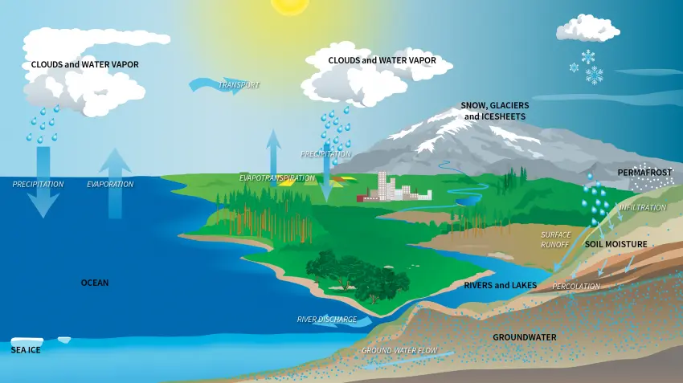

This bar chart shows how almost all of Earth's water is saline and is found in the oceans. Of the small amount that is actually freshwater, only a relatively small portion is available to sustain human, plant, and animal life.
Most of Earth is saltwater in oceans. About 97.2% of Earth’s surface water resides in oceans. There are 5 oceans that surround continents.
The average depth of oceans is 2.7 kilometers so water volume is about 1,338,000,000 cubic kilometers. Oceans are the foundation of the water cycle.
Water moves continuously in nature in three stages: evaporation, condensation, and surface runoff. Ocean currents are like giant conveyor belts moving huge amounts of water all the time.
About 2.1% of Earth’s water is in glaciers. Glaciers are the second largest reservoir of water with most of them in Greenland and Antarctica. Currently, glaciers store about 24,060,000 cubic kilometers of water.
Glaciers fluctuate in water availability the most with ice ages and global warming. As temperatures surge, sea levels rise with it.
This is because melting ice sheets and glaciers add to total water volume. Scientists estimate the sea level will rise 32 to 68 inches by 2100. This rise in sea levels could swallow parts of coastal cities like Shanghai, Olympia, and New York.
As a hidden source of water, we find groundwater everywhere. About 0.65% of the water on Earth is in groundwater stored in an aquifer.
There are two types of groundwater – saline and freshwater from groundwater. Fresh groundwater makes up about 45% of water in the ground. Whereas saline groundwater is about 55%.
Groundwater has more than 100 times the amount of freshwater than lakes and streams combined. In addition, groundwater is hard to get out of the ground, slow to recharge, and easily contaminated. That’s why groundwater is a delicate resource that we use as a rainy-day fund and draw in times of need.
Only 0.009% of water is stored in lakes. For example, the Great Lakes are sources of freshwater which consist of about 21% of freshwater lakes on Earth. Lake Baikal in Russia stores approximately the equivalent of all 5 Great Lakes.
Even though rainwater washes minerals and salts into rivers and lakes, they are mostly freshwater. This is because their minerals get washed away and transported to an outlet in the nearest ocean. So unlike salty oceans, lakes, and rivers constantly have the minerals washed away.
Saline lakes are landlocked bodies of water with a high concentration of salt (NaCl). Evaporation is the only way water exits from saline lakes. Saline lakes like the Caspian and Dead Seas only contain about 0.008% of Earth’s water.
Next, the soil is the uppermost layer that supports plant growth and agriculture. Soil moisture has only 0.005% of the global water distribution.
Soils are about half minerals, half-open space – all within the top few centimeters of the surface. It’s often mixed with organic material, sometimes called humus.
Soil texture describes particle size. For soil, it consists of sand, silt, and clay. Sand is the largest particle size. Silt is just sand, but smaller. Finally, clay has even smaller particles than silt.
Almost insignificant, streams, wetlands, and swamps hold only 0.001%. Finally, only 0.001% of water is in the form of vapor within the atmosphere or in living plants and animals.
For streams, everything upstream ends up downstream. Within a watershed, well-connected networks of tributaries catch precipitation in a watershed or catchment basin. They zig-zag all the way to a main body of water like a river or lake.
Wetlands are depressions on the land surface usually characteristic of specific vegetation. These types of habitats lay the foundation for biological diversity and resilient ecosystems.
If you compare saltwater vs freshwater, about 97.2% is not suitable for drinking because it has salt in it. If we sum up all the sources of freshwater, about 2.8% of water on Earth is freshwater.
Of that 2.8%, 99% of freshwater sources are either from glaciers or in an aquifer contained as groundwater. Just a minuscule amount (1%) are in freshwater lakes, streams, and in the atmosphere.
Glaciers store approximately 3/4 of Earth’s freshwater. This makes glaciers the largest reservoir of freshwater on Earth.
Finally, groundwater is the second-largest reservoir of freshwater on Earth. Groundwater varies on location. Fresh groundwater makes up about 45% of water in the ground. Whereas saline groundwater is about 55%.

Earth has a surface area that’s 71% covered in water. This means that it’s no surprise that water plays a significant role in many aspects of our everyday lives.
Water is a necessity for life and it also contributes to the habitability of planets.
If you have any questions or comments, please do not hesitate to let us know what’s on your mind. We would love to hear from you!